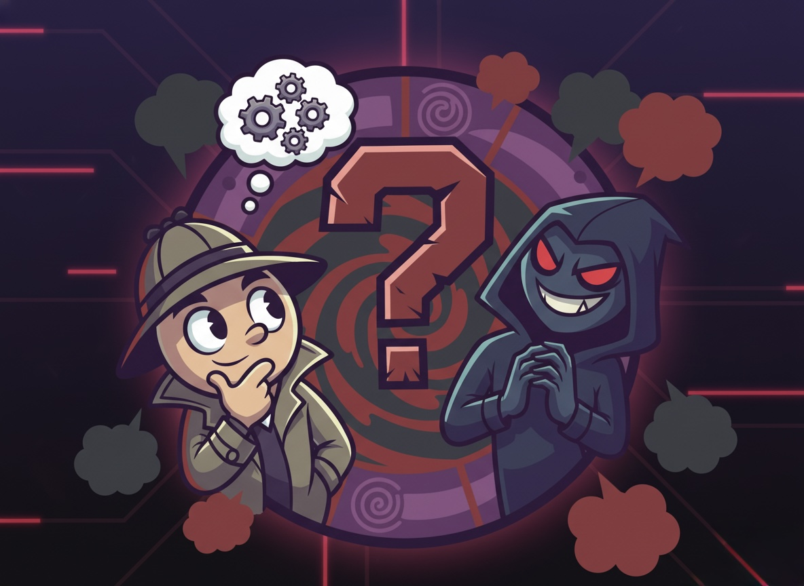

Bienvenido a "¿Quién es el impostor?"
¡Descubre quién es el impostor entre los jugadores en este emocionante juego de deducción social!

Características del juego
- Sin limite de jugadores
- Categorías divertidas
- Roles secretos
- Votaciones para descubrir al impostor
Instrucciones
Para comenzar a jugar, dirígete a la sección de Jugar y sigue las instrucciones para configurar tu partida.
- Se dará una palabra secreta a todos los jugadores, excepto al impostor, quien deberá fingir conocerla.
- Los jugadores discutirán y votarán para descubrir quién es el impostor.
- Se puede escoger si darle una pista al impostor o no para subir la dificultad.
- ¡Diviértete y que gane el mejor detective!